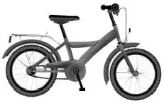
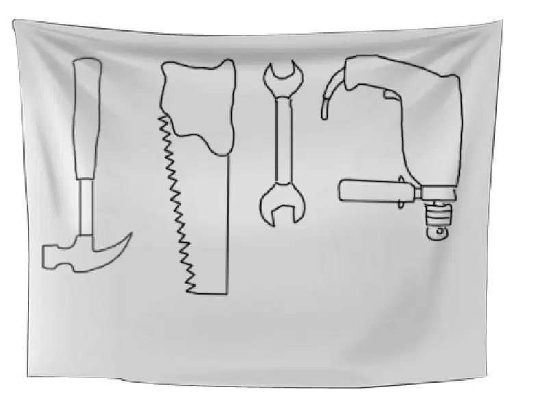
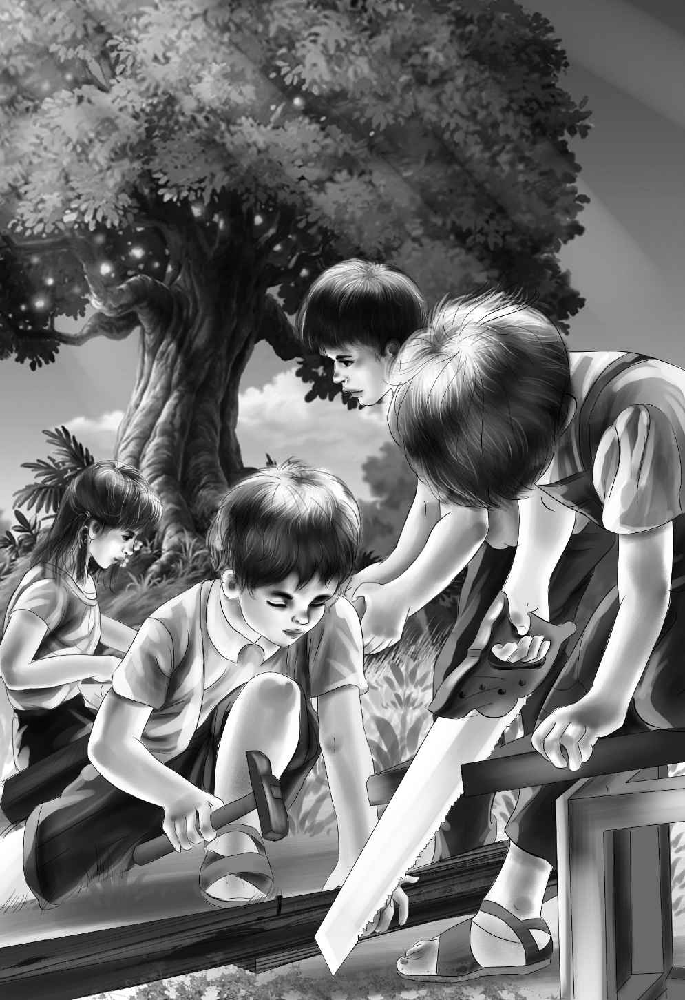
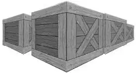

Benny’s Plot

班尼·奥登是个闲不住的孩子。一天吃早饭时，他脱口而出：“隔壁家的那两个男孩，简直是我见过的最笨呆呆的人！”
奥登爷爷惊讶地抬头看着他，说道：“班尼，这可不像你说出来的话，你一直是个心地善良的孩子。”
“哦，我并不是有意去伤害他们，”班尼回答说，“我只是实话实说而已。爷爷，你知道新来的那两个男孩每天都做什么吗？”
“不知道，做什么啊？”
“什么都不做，”班尼说道，“他们不玩游戏，不读书，不干活，也不聊天。哥哥整天坐在秋千上，却从没见他晃动过，那个弟弟更离谱，整天就躺在树下，盯着树叶瞧，都不带睡觉的！”
“爷爷，是真的，”亨利看着奥登先生，说道，“我从没见过这样古怪的男孩。”
班尼继续说：“亏他们还身体健全，一个8岁，一个10岁。”
“你怎么知道他们多大了？”杰西问道。
“我问过啊！我穿过咱家的林子，在篱笆那儿张望的时候，问了他们的年龄。”
“那他们说了些什么？”维莉问道。
“还能说什么？小杰只说了一个字，十，塞米也说了一个字，八。然后我就问，‘你们以前玩过什么游戏？’他们异口同声地说了一个字，没。后来我就回家了，简直无聊透顶。”
亨利望着奥登先生，眉毛稍稍扬起，好像在提出疑问。奥登先生点了点头，从餐桌旁站起来，说道：“我要去上班了。祝你们好运。”
随即，他停下脚步，补充说：“我必须告诉你们，我计划夏末出去旅行，可能定在七月底。所以，留给你们大约三个星期去和邻居小伙伴们疯玩。”
四个孩子一齐看着爷爷。
班尼说道：“我猜就算我们问，您也不会向我们透露任何出游计划吧？”
“是的，小班尼，我不会说的，你知道我向来都守口如瓶。”
“我明白，”亨利笑着说，“需要我开车送您上班吗？”
“不用了，比尔会送我的。不过还是谢谢你的好意，亨利。”
比尔是麦格雷戈太太的丈夫，他负责照看院子、蔬菜园和鲜花。
奥登先生离开后，兄妹四个仍旧坐在桌旁，思索、谈论着。
班尼说道：“我真搞不明白，那两个男孩为什么整天无所事事，其中一定有古怪。”
维莉看着弟弟，说：“班尼，我倒认为他们并不是偷懒。我觉得他们一点儿也不快乐。”
“为什么？”班尼问道，“他们为什么不开心？他们有一个超级大的院子，里面有成片的树木、灌木丛和大石头，对大部分男孩子来说，那可是最好玩的游乐场啊！”
维莉摇了摇头：“我也说不清，不过我猜，他们和父母在一起时不会很开心。”
“你说得没错，”杰西说道，“大家都注意到了吧？上次去他们家做客时，海夫人压根连瞧都没瞧他们一眼。”
亨利总结道：“如果他们真的不快乐，那我们就不能坐视不管。咱们一定得做点什么。”
杰西表示赞同：“最起码我们要尝试一下。”
“那我们该怎么做呢？”维莉说道，“一起想想办法吧。”
就这样，他们沉思了许久。随后，只见班尼瞪大眼睛，跳了起来。
“我想到啦！树屋！每个人都喜欢树屋，连大人都喜欢。无论是《神奇树屋》，还是《鲁滨孙漂流记》里，大家都喜欢树屋！”
杰西说道：“小班班，你说得对，海先生家的后院里有好多树，有没有一棵适合建造树屋呢？咱们还从没亲手建过呐！”
“一定很有意思，”维莉说道，“即使对于我们来说，也是件很有趣的事。亨利，赶快告诉我们该怎么做。那两个男孩现在在哪儿？”
与往常一样，小杰和塞米待在自家的后院里。他们并肩坐在秋千上，轻轻摇晃着。
班尼见此情景，不禁说道：“嗯，这倒是个好现象。以前，我从没见他们坐在一起荡过秋千呢！咱们现在就过去吧！”
于是，奥登家的孩子走到篱笆旁，大声打着招呼：“嗨，你们好啊！”
“你们好。”两个男孩同时回应道。他们停止了荡秋千。
班尼喊道：“你们好像都不怎么出去玩，也不做其他事儿吗？”
塞米回答道：“没什么特别的事可以做呀。”
“你们有自行车吗？”亨利问道，“我好像看见了两辆。”
“噢，没错，我们有，”小杰回答，“但我们不能在公路上骑。妈妈说那样太危险了。”
杰西问道：“你们俩单独在这儿吗？你们的妈妈在不在家？”
“不，她现在不在家，”小杰说道，“妈妈最近在写一本书，她需要经常去新开的那家科学图书馆。这也是我们搬到这儿的原因，好让她有一个合适、安静的写作环境。可妈妈却不知道该拿我们怎么办，她说，‘只要你们待在院子里，就会很安全，千万别惹出什么事儿来。’”
“我明白了，”亨利说道，“如果我们过去看你们，你们的妈妈会不会介意？”
小杰回答说：“不会的，不会的。可是我们不能走出这个院子，妈妈怕我们乱跑被汽车撞到。要是你们过来的话，我肯定爸爸会很高兴的，不过他老是告诫我们，不要打扰你们，因为你们是大孩子。”
这时，塞米突然插了一句：“我爸爸很聪明，他是一位科学家。我长大后也要像他一样，成为科学家。我喜欢琢磨叶绿素。”
“琢磨什么？”班尼惊讶地问。
“叶绿素呀，”塞米重复了一遍，“爸爸说，叶子中含有一种名叫叶绿素的物质，叶绿素是人类生存的必需品。我喜欢躺下来，观察这些树木，琢磨这些。”
班尼忍不住笑出声来：“这话对于一个八岁的小孩来说，实在是很高深。”
小杰插了一句：“我喜欢思考太空，最想用电脑指导人们在月球上行走。”
班尼说道：“看来你们都对大人的事情感兴趣，却并不想玩游戏。这是为什么呢？”
小杰沉思了一分钟，才回答道：“我想，可能是因为我们没有同龄的朋友。”
这时，亨利开口了：“班尼提议建一座树屋，这会很好玩的。”说完，奥登兄妹便静静地等待着两个男孩的回应。
两兄弟先是面面相觑，随即打开了话匣子，一反之前的沉默寡言。
塞米问道：“你们知道怎样搭建树屋吗？”
“呃，我以前从没建过，”亨利回答说，“不过我觉得自己可以的。”

“建树屋不会有危险，”塞米高兴地欢呼道，“我们也不会惹出什么乱子。”
“我们还有很多工具，都是我爸爸的！”小杰说道，“我想他会借给我们的。爸爸很宝贝那些工具，他专门在地下室的墙壁上贴了一大块白色油布，用黑笔画出了每种工具的样子——画得和实物一模一样。不管谁用完，都必须将工具放回原处。”
“我真想去瞧一瞧！”班尼说道，“我常常连一把锤子都找不到。”
“我们还有好多木板呐！”塞米大声说，“地下室里有很多用来装家具的大木箱子，其中还有个装钢琴的木箱，我们可以将它拆开。你们想去看看吗？”
两个男孩引领着奥登兄妹四个，来到通往地下室的楼梯口。小杰打开地下室的灯，果然正如塞米所说，有很多木箱存放在这儿。
亨利环顾着这些箱子，说道：“树屋的地板一定要结实。我们可以用钢琴箱子来做地板。”
杰西却置疑：“等等，你们认为这样做妥当吗？或许，海家爸妈留着这个箱子还有别的用途呢？”
“噢，肯定不会的。”小杰说道，“我觉得，他们不会记得地下室里有这些箱子。”
塞米点点头表示赞同：“没错，箱子对于爸爸妈妈来说，根本不值一提。”
“好吧，如果你们确定的话，那我们就开始喽，”亨利说道，“光是收集做地板的木板，就要花好长时间呢。”
六个孩子齐心协力，将钢琴箱子沿着地下室的楼梯往外拖，一直拖到后院里，再搁稳。
“现在，我们需要挑选一棵树，”塞米说道，“我觉得那棵树最适合不过了。”他向上一指，“对于建造树屋来说，它可是很好的选择。瞧，是一棵白橡树。”
亨利看着塞米，赞道：“你的眼光真不错，那是整个院子里最好的树了。”
杰西仔细瞧了瞧，说道：“我可从没见过这样的树，下面的树枝大得反常。”
“它的确很特别，”塞米说道，“爸爸以前告诉过我们，马克斯叔叔曾经从这棵树上摔下来过。”
“那是很多年前的事了。”小杰说。
“你们的马克斯叔叔？他是谁？以前住在这儿？”班尼问道。
两个男孩相视一笑，小杰开口说：“告诉你们也无妨。爸爸和马克斯叔叔是亲兄弟，他们小时候就住在这栋房子里。”
“原来，这就是海先生不像新住户的原因，以前我们还对此很困惑呐！”亨利说道。
“对，就是这样。”小杰说，“爸爸并不是房子的新住户，马克斯叔叔也不是。很久以前，爷爷买下了这幢房子。”
“这栋房子还不小呢，”杰西说道，“足足有20个房间。”
班尼问道：“是在我们爷爷买下我家房子之前买的吗？”
“是的，”小杰说道，“爸爸告诉过我们，你爷爷搬来之前，先后曾有两家人住过你家房子。”
“那，你们的爸爸和叔叔，在他们小的时候，一定在这儿玩得很开心吧？”班尼说道。
“他们大吵了一架，”小杰说，“爷爷给了他们一副望远镜——一副很棒很精致的单筒望远镜。可是有一天，望远镜不见了，爸爸说是叔叔拿走了，叔叔反过来说是爸爸拿的。从那以后，他们之间就有了隔阂。”
维莉说道：“我真不明白，区区一副望远镜就让他们的关系发生了巨变吗？”
“不单单是望远镜啦，”小杰说道，“爸爸去上大学了，可是马克斯叔叔没有。他在部队里待了好几年，回来后决定开一家餐厅，所以买下了紧邻国道的一块地。他现在一个人住在餐厅楼上。”
班尼兴奋地叫道：“噢，我知道你说的那个地方，叫海餐厅吧？”
“没错！”塞米说道，“爸爸说如果有时间，就带我们去叔叔那儿玩，但他总是没时间。我倒是很想去那里，问问马克斯叔叔关于望远镜的事。”
小杰摇了摇头：“那样做爸爸肯定会生气的。他到现在还认为马克斯叔叔一定知道望远镜的去向——说不定叔叔真的知道。”
塞米说道：“要是我们的树屋建成了，还真需要一个望远镜呢！”
“好啦，赶紧干活吧。”小杰说道，“建造一座树屋，总比幻想着有一个望远镜更有趣吧？”
奥登家的孩子全都笑了起来，海家兄弟迫不及待地想动手开工了。
这时，小杰提出了疑问：“我们怎样到树上搭建树屋呢？”
“爬树呀，”班尼回答说，“你会爬树吗？”
小杰看了看巨大的树枝，“我觉得等树屋建好后，安一个绳梯会更好玩。我们上去后，可以把绳梯收起来。”
“还有，我们可以准备一个篮子，”塞米继续说，“在篮子上系根绳子，把晚饭拉上去。”
班尼盯着兄弟俩：“你们太让我吃惊了吧？第一次去你家做客时，你们一句话都没有，现在可是滔滔不绝啊！”
小杰迟疑了一会儿，才开口说道：“说实话，是因为爸妈不喜欢吵闹，他们总爱沉思，不乐意听我们说话。可是你们不同，我们爱和你们聊天。”

“不过现在，我们可要开始干活啦。”班尼借来小杰的锤子，说，“要小心，先猛敲木板背面，再把钉子头敲出来。”
塞米不解地问道：“可要是敲打钉子头的话，它不就扎得更深了吗？”
“不，不要敲钉子头，只敲打钉子周围的木板。明白吗？这样一来，木板就会往后退，钉子就突出来了。然后，再用钳子将钉子撬出来。”
接下来，亨利跑回自己家，又拿了两把锤子过来。不一会儿，海家的后院就充斥着震耳欲聋的敲打声了。

小杰和塞米开心地忙活着，小脸变得红扑扑的。
亨利提议道：“我觉得咱们最好再找个箱子过来。这么多人全都围着一个箱子转，会碍手碍脚的。”
“同意，”杰西表示赞同，“还会不小心敲到别人的手指。”
“还有可能敲到自己的。”塞米附和道。
眼看着木板越堆越高，亨利说道：“大家把最大的木板垒在一起，较小的木板单独放在另一堆。如果有个刨子就好了，我就可以把木板表面磨光滑。”
“我去拿一个过来，”小杰说，“刨子能磨掉木板上的碎屑。”
随即，杰西看了看手表，不由惊叫起来：“哇，已经12点啦！我们该回家了。”
亨利看着两堆木块：“我想这些已经足够用来铺地板了。不过，我们要先征得你们爸爸妈妈的同意，才能开始建树屋。说到底，这是他们的树。”
“他们不会在意的，”塞米摇了摇头，“不过，我们最好还是先问问！”
“好了，再见吧！”小杰说，“很遗憾今天下午不能继续了。”
“你们可以自己先干着，只用收集更多的木板就行，我们会用到好多的。”班尼说道，“你们要自己准备午饭吗？”
“不，”小杰说，“我们的午饭早就准备好了，妈妈放在桌子上了。平常我感觉不到饿，可今天却超级饿呢！”
于是，海家的孩子们准备去吃午饭了，奥登家的孩子也转身回家了。
爷爷正好在家，孩子们告诉了他刚刚发生的事儿，班尼这次却没有当主讲。
不过他冷不丁问了一句：“爷爷，还记得吗，很久以前你说过，要想说出‘我知道错了’非常不容易？”
奥登先生笑道：“是啊，我确实说过这句话。”
班尼说：“我知道错了。”
“小班班，你是指什么？”杰西问道。
“关于海家的孩子，”班尼回答说，“我以前说他们很笨呆呆，什么事都不做。”
“噢，那现在呢，他们做了什么？”奥登先生问道。
“他们会思考，”班尼说，“这就是他们所做的事。”